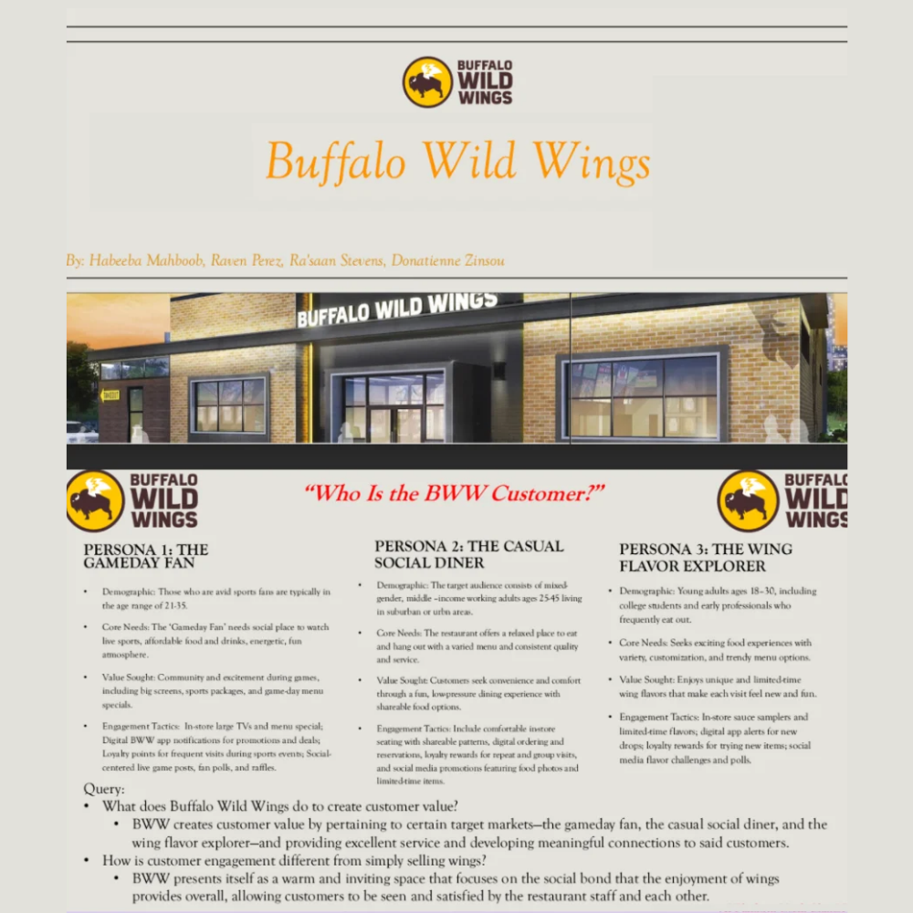

Mock Strategic Marketing Presentation for Buffalo Wild Wings
This project focused on Buffalo Wild Wings and explored how the brand uses marketing to create customer value and drive engagement, rather than relying solely on product promotion. The core objective was to analyze marketing as an experience-driven process, showing how Buffalo Wild Wings connects with customers through entertainment, community, and brand interaction.
Customer Personas
We developed three unique customer personas representing key segments of BWW’s audience. Each persona outlined:
- Demographics: age, lifestyle, and income characteristics.
- Core needs: primary motivations and expectations.
- Value sought: desired experiences and benefits.
- Engagement tactics: events, digital promotions, loyalty rewards, and social media.
Value Propositions
Each persona included a concise value proposition statement explaining how Buffalo Wild Wings could fulfill the customer's needs and strengthen brand loyalty.
Key Discussion Question
How does Buffalo Wild Wings create customer value? Through a combination of atmosphere, service, community, and multi-channel engagement.
Customer Engagement vs. Selling
The project emphasized emotional connection, ongoing interaction, and experiential value rather than basic transactions.